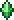
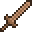
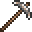
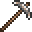
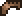
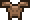
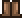

Terraria Items
Items
Weapons  

Weapons are essential items used for combat against enemies, bosses, critters, and even other players during PvP games. Some weapons can be crafted at a Work Bench or a Pre-Hardmode/Hardmode Anvil, while others can only be found in Chests, as enemy drops, or purchased from NPCs. Terraria has a wide variety of weapons and weapon classes, each suited to particular play styles or specific tasks.
Tools
 

Tools are an association of items that are used to perform the various non-combat tasks involved in Terraria gameplay, such as construction and exploration, among others. Tools are generally wielded via the ⚒ Use / Attack key while they are held as the active hotbar item, and many also have auto-use, allowing for continuous use via holding the ⚒ Use / Attack key. Some tools inflict damage upon enemies, but are differentiated from weapons, as this is not their primary use. Tools are also differentiated from accessories, which provide passive abilities, while tools are used proactively.
Armor
Armor is a set of equipable defense items that reduce damage taken from enemies and most other damage sources. Armor pieces are equipped by placing them in the armor slots of the player's inventory. Armor can also be placed in vanity slots to change the player's appearance without affecting stats. Armor pieces are either crafted, purchased from NPCs, or dropped from enemies.